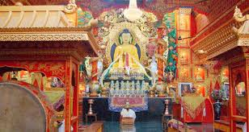
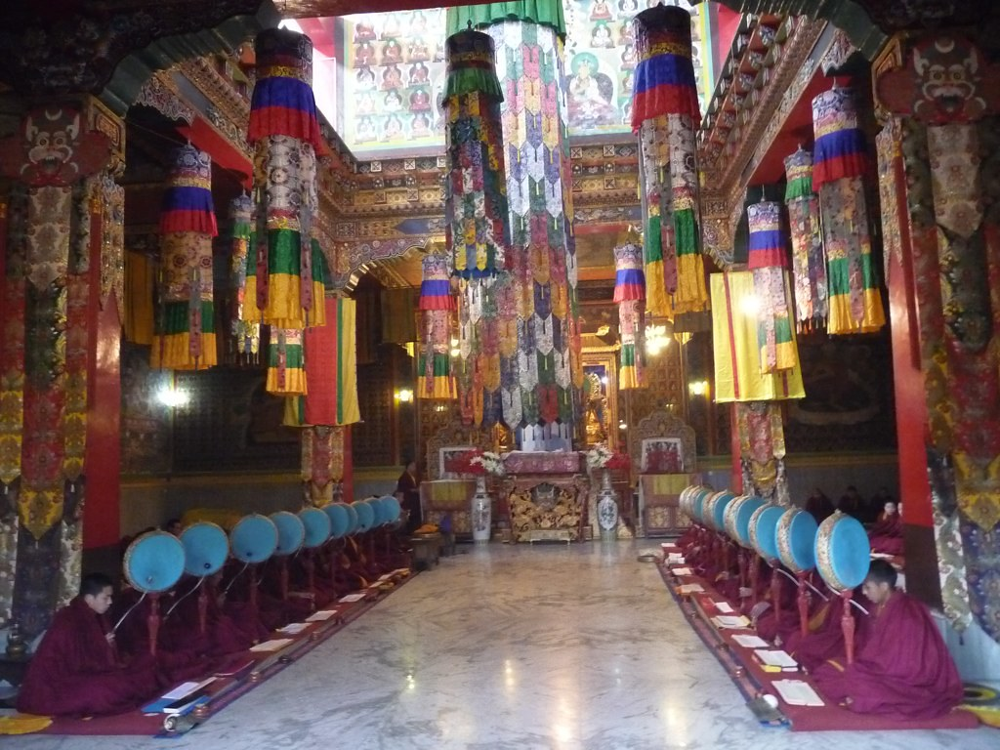
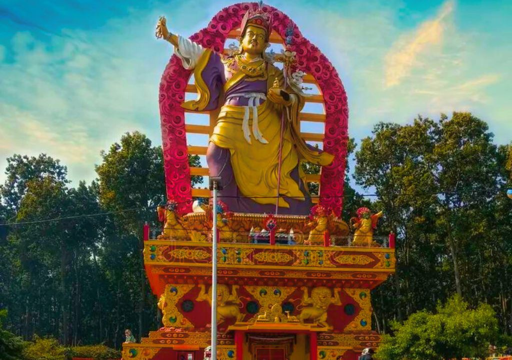
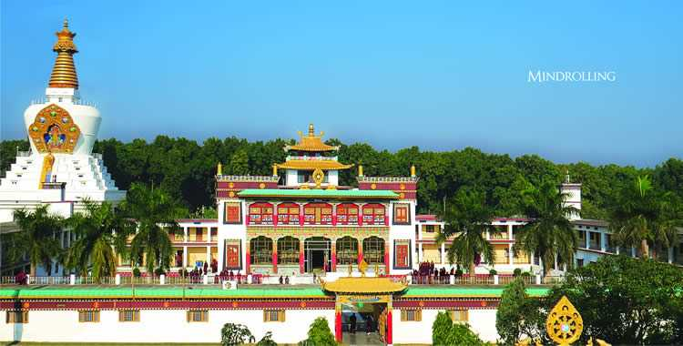

The Buddha Temple at Mindrolling Monastery is one of the largest and most beautiful Tibetan Buddhist centers in India, located in Clement Town, Dehradun. Established in 1965 by Khochhen Rinpoche, this grand monastery follows the Nyingma school of Tibetan Buddhism and serves as a major seat of learning, meditation, and cultural preservation. The highlight is the massive 185-foot-tall Great Stupa (one of the tallest in Asia), adorned with intricate gold leaf work, colorful murals, and a serene statue of Lord Buddha inside — radiating peace and spiritual energy.
The complex features beautifully landscaped gardens, prayer wheels, colorful prayer flags fluttering in the breeze, a giant golden Buddha statue, and a peaceful meditation hall. Monks in maroon robes chant prayers, and the air fills with the sound of bells and incense — creating a deeply calming atmosphere. It’s a perfect place for reflection, photography, and experiencing Tibetan culture and Buddhism in the Doon Valley. Visitors often leave feeling refreshed and spiritually uplifted.
October to March for pleasant weather and clear skies; early morning or late afternoon for soft light on the stupa and fewer crowds.
185-ft Great Stupa, golden Buddha statue, intricate murals, prayer wheels, colorful flags, peaceful gardens, and active monastery life.
Wear modest clothes (cover shoulders & knees), maintain silence in prayer areas, walk clockwise around stupa, carry water, and attend morning/evening prayers if possible.
"The Buddha Temple at Mindrolling is a radiant beacon of peace — where the golden stupa touches the sky, prayer flags dance with the wind, and the heart finds quiet in the gentle embrace of Tibetan wisdom."